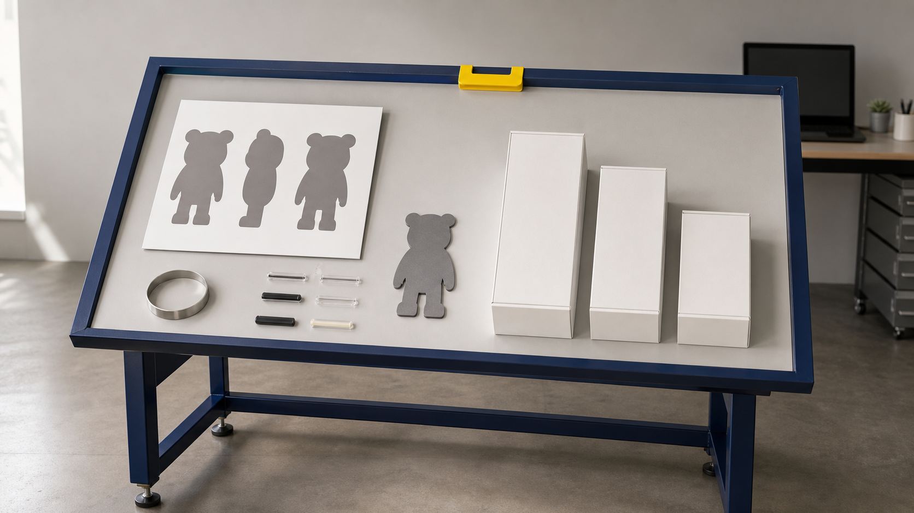
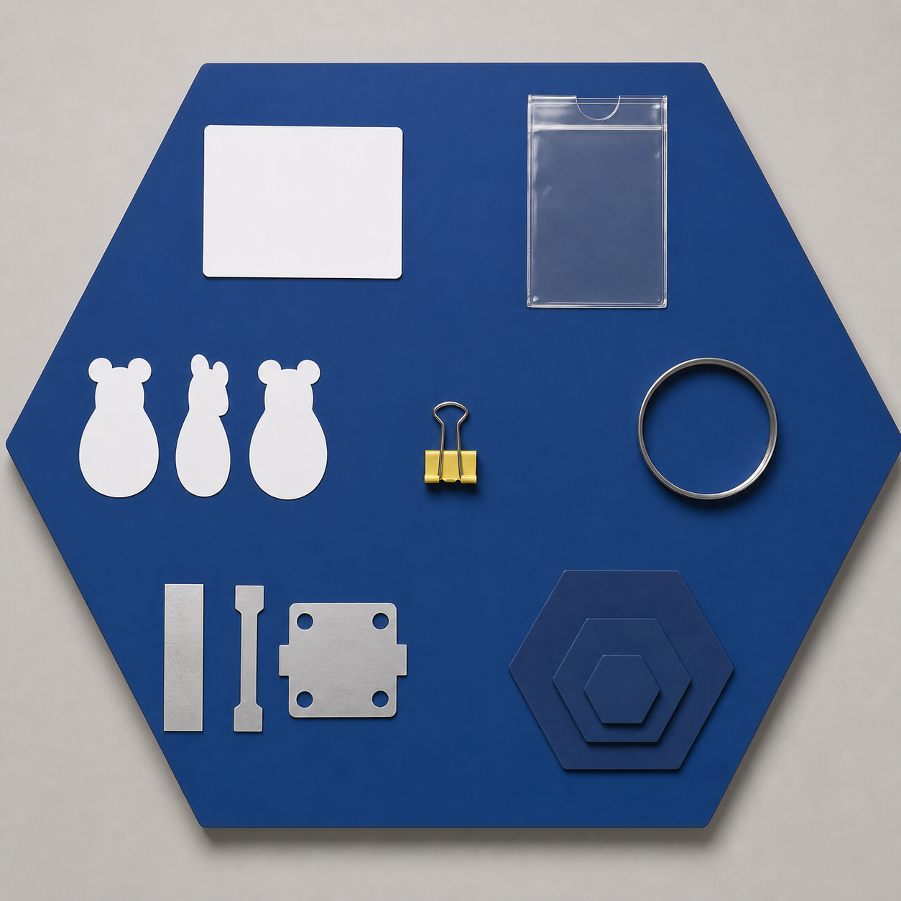
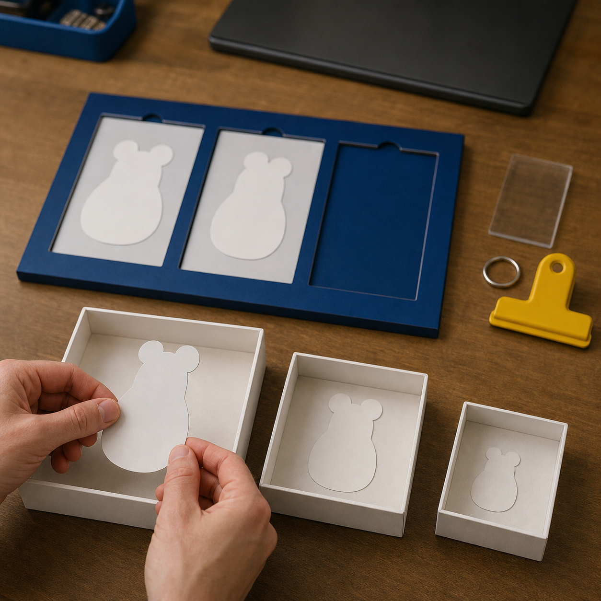
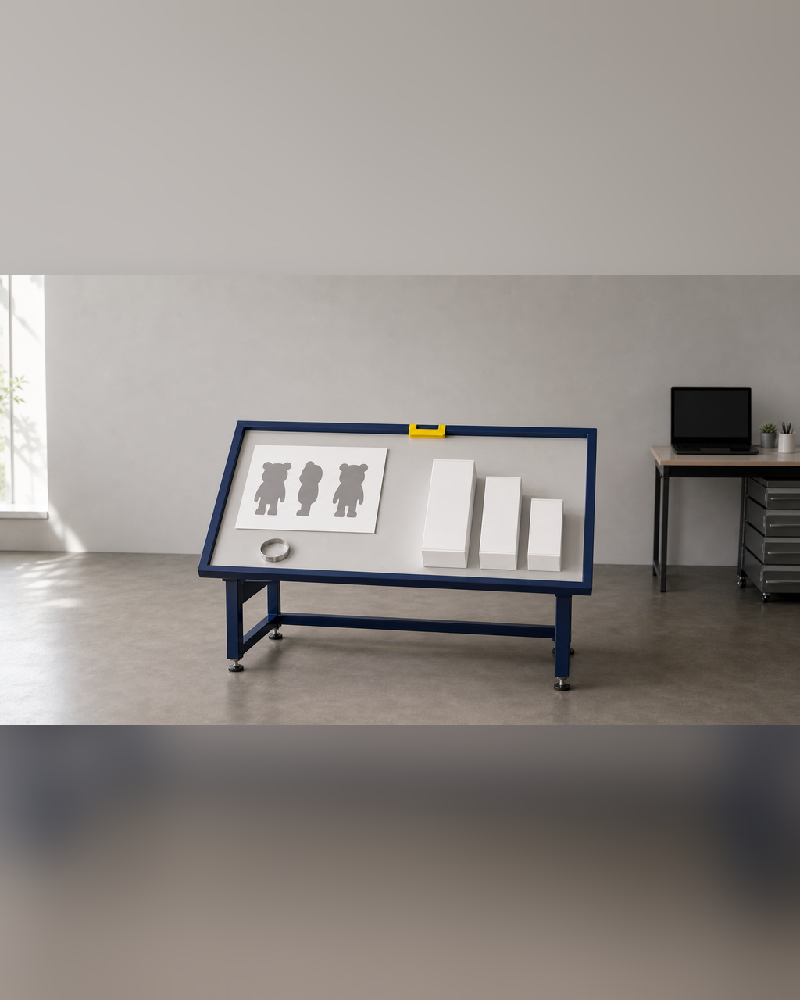

Day 1 到底做什么：先把方向做对
Day 1 的难点不是立刻做出一张更漂亮的图，而是在进入三维前把“要做什么”缩成一个五天内可以验证的对象。同一个角色可以被做成完整立体、半身、浮雕或局部样；用途、外接尺寸、姿态、支撑方式和观看角度不同，后续需要的视觉输入与结构方案也会改变。 如果方向没有先锁定，已有 IP / 角色资产的人容易把原画中的遮挡、薄片和悬空细节原样带进模型；只有想法、草图或初步设定的人则容易不断扩展故事和造型，迟迟得不到可用输入。结果是 Day 2 才发现资料不足或范围过大，修模、打印和后处理的有限时间被返工占用。

具体问题
Day 1 的难点不是立刻做出一张更漂亮的图，而是在进入三维前把“要做什么”缩成一个五天内可以验证的对象。同一个角色可以被做成完整立体、半身、浮雕或局部样；用途、外接尺寸、姿态、支撑方式和观看角度不同，后续需要的视觉输入与结构方案也会改变。
如果方向没有先锁定，已有 IP / 角色资产的人容易把原画中的遮挡、薄片和悬空细节原样带进模型；只有想法、草图或初步设定的人则容易不断扩展故事和造型，迟迟得不到可用输入。结果是 Day 2 才发现资料不足或范围过大，修模、打印和后处理的有限时间被返工占用。
核心判断
方向做对的标准不是“大家都喜欢”，而是项目卡上的用途、尺寸、关键辨识点、版权状态和五天完成出口能够互相成立。一个方案应能回答：它为什么要成为这个实体形态，最重要的轮廓是什么，哪些部位必须补视图，哪些细节可以简化，以及失败时退到哪个仍可验证的出口。
Gate 1 是可复核的放行条件。进入三维生成前，至少要有受控的视觉输入、明确的结构风险、主方案、备选方案和降级方案，并写清公开展示边界。缺少关键背面、侧面、材质或授权信息时，应先补齐或缩小范围，而不是用 AI 猜测把不确定性带进后续文件。
步骤或标准
可按以下六项完成 Day 1 的范围锁定。每项都要留下可检查的文件或记录，并标记通过、待补或降级。
- 写项目卡：只确定一个主要用途、一个预计外接尺寸和一个五天内必须验证的问题；同时记录当前起点与期望的基础、标准或进阶出口。
- 选主对象：已有 IP / 角色资产者从现有作品中选择一件最适合实物化的对象；只有想法、草图或初步设定者先用故事、关键词、参考方向和使用场景形成第一版视觉输入。
- 补结构视图：核对正面、侧面、背面、底部、遮挡处和材质参考；无法确认的结构单独列为待补，不让生成工具自行补写事实。
- 做制造预判：按真实尺寸检查重心、落地点、悬空件、薄片、细杆、封闭体、拆件和装配位置，并记录可能需要加厚、合并或贴近主体的部位。
- 建立三套范围：主方案保留核心辨识点，备选方案降低姿态或细节风险，降级方案改为半身、浮雕、局部样或更小的验证对象；三套方案都要能说明验证目的。
- 执行 Gate 1：核对用途、版权、视觉输入、尺寸、结构风险和三套范围是否齐全；通过后冻结受控输入进入 Day 2，未通过则补资料、澄清权限或缩小范围。
常见错误
以下错误会让方向问题延迟到模型、打印或发布阶段才暴露。
- 先追求精细主视觉，再决定实体用途和尺寸；后果是画面里的细节、姿态与遮挡可能无法按目标工艺制造，已经完成的视觉工作需要重做。
- 把“像原画”作为唯一判断，不检查重心、落地点、薄片和悬空结构；后果是初模看起来相似，却在 Gate 2 或切片时出现不稳定、难支撑或易断问题。
- 只保留一个理想方案，不准备备选与降级出口；后果是单个高风险部位就可能阻塞五天排程，连局部样或结构验证也无法按时形成。
- 版权或公开边界不清仍继续生成和发布；后果是后续图片、网页与社媒资料可能使用无权公开的内容，已经制作的资产也无法安全归档。
- 把想法阶段不断扩展成完整世界观；后果是 Day 1 无法冻结一个具体对象，Day 2 缺少稳定输入，后续每一版都可能改变方向。
与五天课程的关系
这一主题直接对应 Day 1“方向判断与结构转译”和 Gate 1。当天先完成项目诊断与范围锁定，再补正面、侧面、背面和材质参考，识别遮挡、悬空、薄片与重心问题，最终形成项目卡、版权状态、视觉输入、尺寸与工艺预判，以及主方案、备选方案和降级方案。
Gate 1 通过后，下一阶段是 Day 2 的 AI 三维初模与 Nomad 人工修模，并在 Gate 2 检查受控模型、GLB、STL、真实尺寸、厚度、连接、重心、拆件和可支撑性。若 Day 1 的输入或范围未通过，应先补资料或降级，不能用后续修模替代方向判断。
事实 / 案例 / 完成度边界
本文依据公开课程基线中的 Day 1、Gate 1 和五天交付边界整理。当天规划的四张图片只用于示意项目卡、结构输入、范围比较和 Gate 1 核对方法，不是学员案例、真实课堂、真实委托或已经完成的制作成果。真实案例只有在来源、授权、文件版本、制作记录和完成状态可核验时才能单独标注；示意图不能替代真实案例。
五天内的目标是完成第一版可继续发展的项目闭环，Day 1 只负责把方向和输入推进到可进入三维的状态，不代表已经得到可打印模型或成品。具体完成度受起点、结构复杂度、尺寸、设备、材料、打印排程和修正次数影响；课程不承诺人人完成商业级精修、一次打印成功、正式包装印刷、批量生产、正式展览、授权成交或销售，也不承诺所有项目达到统一完成等级。
报名入口
如果你已有 IP / 角色资产，可以在报名资料中说明现有原画、角色设定或三维文件、版权状态、希望保留的辨识点、目标实体和最担心的结构问题；Day 1 会从这些真实资料中选择可执行范围。
如果你只有想法、草图或初步设定，也可以如实填写故事、关键词、参考方向、希望做成的物品和现有设备，不需要先把早期想法包装成成熟项目。两类起点都从 Day 1 / Gate 1 进入同一条生产链。公开报名地址：https://wj.qq.com/s2/27296919/9499/



课程时间：2026 年 10 月 2 日至 10 月 6 日｜青岛｜每班限 10 人
填写报名资料 →